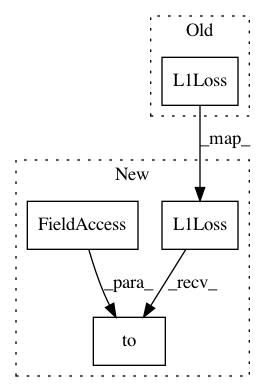

cbc51f8495a8d5e314cd1ae0704f32a4e3dc28b1,codes/models/SFTGAN_ACD_model.py,SFTGAN_ACD_Model,__init__,#SFTGAN_ACD_Model#,17
Before Change
if train_opt["feature_weight"] > 0:
l_fea_type = train_opt["feature_criterion"]
if l_fea_type == "l1":
self.cri_fea = nn.L1Loss()
elif l_fea_type == "l2":
self.cri_fea = nn.MSELoss()
else:
raise NotImplementedError("Loss type [%s] is not recognized." % l_fea_type)
After Change
if train_opt["feature_weight"] > 0:
l_fea_type = train_opt["feature_criterion"]
if l_fea_type == "l1":
self.cri_fea = nn.L1Loss().to(self.device)
elif l_fea_type == "l2":
self.cri_fea = nn.MSELoss().to(self.device)
else:
raise NotImplementedError("Loss type [%s] is not recognized." % l_fea_type)
In pattern: SUPERPATTERN
Frequency: 3
Non-data size: 4
Instances
Project Name: xinntao/BasicSR
Commit Name: cbc51f8495a8d5e314cd1ae0704f32a4e3dc28b1
Time: 2018-06-16
Author: wxt1994@126.com
File Name: codes/models/SFTGAN_ACD_model.py
Class Name: SFTGAN_ACD_Model
Method Name: __init__
Project Name: xinntao/BasicSR
Commit Name: cbc51f8495a8d5e314cd1ae0704f32a4e3dc28b1
Time: 2018-06-16
Author: wxt1994@126.com
File Name: codes/models/SRGAN_model.py
Class Name: SRGANModel
Method Name: __init__
Project Name: xinntao/BasicSR
Commit Name: cbc51f8495a8d5e314cd1ae0704f32a4e3dc28b1
Time: 2018-06-16
Author: wxt1994@126.com
File Name: codes/models/SR_model.py
Class Name: SRModel
Method Name: __init__